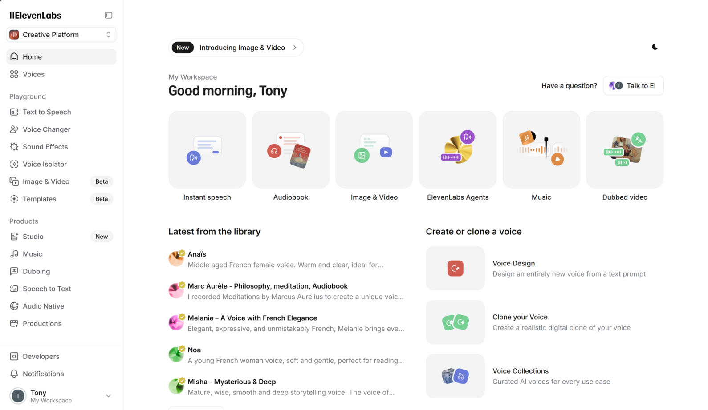

ElevenLabs Avis : synthèse vocale (TTS), clonage vocal & guide
ElevenLabs est une plateforme centrée sur la génération de voix IA (text-to-speech) et le clonage vocal. Ce guide indépendant vous aide à évaluer l’outil, produire des voix-off propres et éviter les pièges (droits, confidentialité, cohérence audio).
Commencer gratuitementTransparence : certains liens sont affiliés (sans surcoût pour vous). Ce site n’est pas le site officiel d’ElevenLabs.
Ce guide est basé sur des essais réels d'ElevenLabs : génération de voix françaises, ajustement des paramètres de stabilité, export audio pour montage vidéo et vérification des limites liées au clonage vocal. Les conseils ci-dessous viennent de ces manipulations, pas seulement de la fiche commerciale de l'outil.

Ce que nous avons vérifié
Voix-off vidéo
Le rendu devient nettement plus fiable quand le script est découpé en segments courts, puis validé à l'écoute avant le montage.
Test TTSPrononciation française
Les noms propres, acronymes et termes anglais demandent une passe de correction. C'est souvent là que se gagne ou se perd le naturel.
Contrôle qualitéClonage vocal
Le clonage doit être réservé aux voix autorisées. Le vrai sujet n'est pas seulement la qualité audio, mais la preuve du consentement.
Droits & sécuritéDémonstration ElevenLabs
Pourquoi choisir ElevenLabs
- 🗣️ Voix IA réalistes pour narration (TTS)
- 🎙️ Clonage vocal (uniquement avec consentement)
- 🧩 Bibliothèque de voix + réglages (style, stabilité, prononciation)
- 🌍 Multilingue (selon modèle et offre)
- 🧰 API pour automatiser la génération de voix
- 🎛️ Exports audio pour montage et diffusion
- 🔒 Usage commercial : vérifier la licence de votre plan
Checklist issue de nos tests
| Point à vérifier | Pourquoi c’est important |
|---|---|
| Qualité sur textes longs | Éviter les variations de timbre, les “drifts” et les intonations étranges. |
| Contrôles (style, stabilité, pauses) | Plus de contrôle = moins de retouches au montage. |
| Prononciation des noms/marques | Indispensable en vidéos produit, SAV et e-learning. |
| Langues & accents | Testez votre langue sur un extrait avant de lancer une production complète. |
| Licence & droits | Vérifiez l’usage commercial, les restrictions et la politique de clonage vocal. |
| API / quotas / coût | Anticiper le budget (crédits) et l’automatisation (batch, intégrations). |
Conseil : les offres, quotas et licences évoluent. Vérifiez toujours les informations sur le site officiel avant achat.
Erreurs fréquentes (et comment les éviter)
Texte écrit “comme un article”
Écrivez pour l’oral : phrases courtes, respirations, ponctuation.
Prononciation approximative
Ajoutez des indications (orthographe phonétique) et validez les passages sensibles.
Clonage vocal sans autorisation
Obtenez un consentement explicite et documenté : c’est non négociable.
Passez de la théorie à la pratique
Après avoir parcouru la checklist, vous pouvez créer un compte ElevenLabs et tester la synthèse vocale sur vos propres scripts (voix-off, podcasts, livres audio).
Questions fréquentes
ElevenLabs propose généralement un plan gratuit ou une période d’essai avec des limites. Les quotas évoluent : vérifiez sur le site officiel.
Vous fournissez un échantillon audio et l’outil apprend les caractéristiques de la voix. À utiliser uniquement avec autorisation explicite.
Il sert surtout à générer l’audio (voix-off). La vidéo se fait ensuite dans un outil de montage : vous synchronisez la narration, ajoutez visuels et sous-titres.
Cela dépend du plan et des conditions de licence. Lisez les conditions officielles avant publication (pub, livre audio, etc.).
Écrivez pour l’oral, découpez en segments, utilisez la ponctuation pour guider l’intonation et corrigez les prononciations avant export.
La couverture linguistique évolue. Testez votre langue et votre accent sur un court extrait avant de produire en volume.
Prêt à révolutionner vos contenus ?
Essayez ElevenLabs et construisez un workflow simple pour produire des voix-off cohérentes, prêtes pour le montage et la diffusion.